Nie tak dawno temu, w nie tak odległym Laboratorium EE…
Zrąb do aplikacji usprawniających pracę biurową
- Patryk Hes
- Paweł Kamiński
- Borys Popławski
- Robert Tomkowski
pod kierunkiem dra Janusza Jabłonowskiego
Zleceniodawca
Laboratorium EE
Problem rozwijającej się firmy
to dużo małych problemów:
- Kto pracuje przy jakim projekcie?
- Jakie formalności trzeba spełnić, aby wziąć urlop?
- Ktoś mi ukradł monitor!
- Kto ma dostęp do tego serwera?
- ...?!
Zatem zróbmy zrąb!
Zrąb — szkielet, wiązanie budowli; podstawa, zarys czegoś; (za SJP PWN)
Potocznie zwany frameworkiem.
Przydałby się zrąb do tworzenia prostych aplikacji biurowych.
Plan działania: zróbmy zrąb oraz kilka przykładowych wtyczek.
Specyfika Lab EE
Aktywnie rozwijane oraz używane technologie:
- Django
- Ruby on Rails
- jQuery
- AngularJS
Języki, biblioteki i frameworki
Back-end:
- python-social-auth — zapewnia logowanie kontem Google
- django-rest-framework — przyjazne i ustandaryzowane formaty odpowiedzi serwera
Front-end:
 — używane przez AngularJS — manipulacja elementami drzewa DOM
— używane przez AngularJS — manipulacja elementami drzewa DOM- Lo-Dash — manipulacja strukturami danych
Języki, biblioteki i frameworki
Back-end:
- — framework MVC z ORM, routingiem, gotowym interfejsem administracyjnym
Front-end:
- 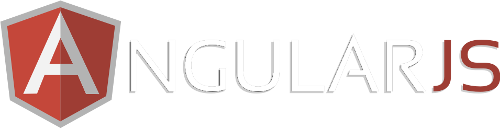 — framework MVW do tworzenia single-page applications, zmienia podejście do pisania front-endu z imperatywnego na deklaratywne
Tworzenie nowych wtyczek
Po pierwsze należy stworzyć nową aplikację w django:
python manage.py startapp nazwa_aplikacji
prefix_url = "example"
static_files = {
'js': {
'example/js/': ['main.js', ]
},
'css': {
'example/css/': ['main.css', ]
},
'html': {
'example/html/': [
('main.html', 'exampleMainController', 'main', ),
]
}
}
permissions = {
"examplePermission": "Allows blabla.",
}
access_for_everyone = True
tiles_templates = ['example/html/maintile.html', ]
angular_module = 'eenetExample'
angular.module('eenetExample', [])
.controller('exampleMainController', function($scope, $resource) {
$scope.myList = [];
$resource('/example/mylistview/ ').get(
function(data) {
$scope.myList = data;
},
errorFunction
);
});Pozostaje napisać już tylko logikę (funkcjonalność) oraz interfejs aplikacji.
Efekty pracy
Podział logiki biznesowej na wtyczki
Efekty pracy
Wtyczka Użytkownicy
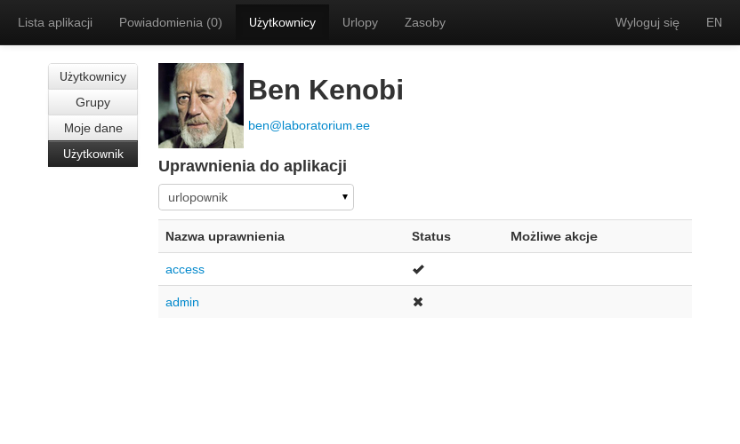Efekty pracy
Wtyczka Użytkownicy
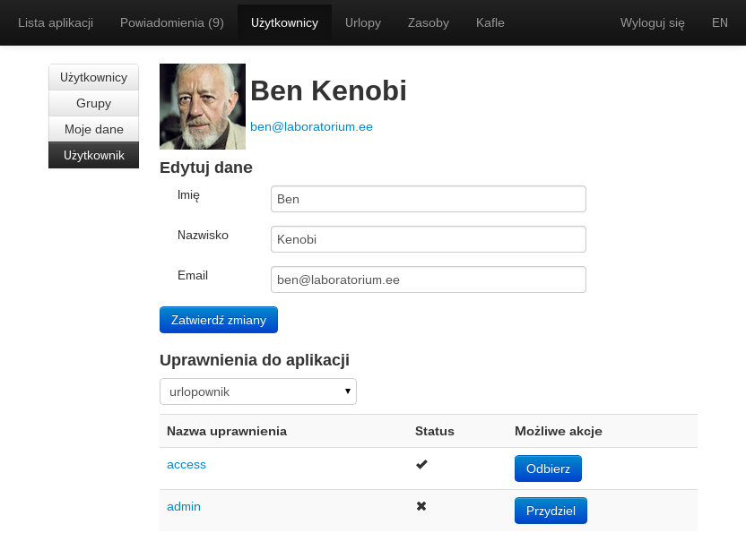Efekty pracy
Wtyczka Użytkownicy
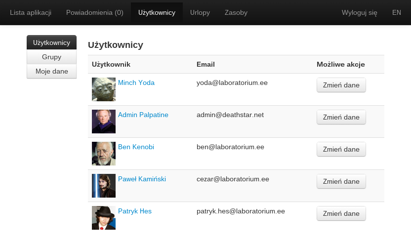Efekty pracy
Wtyczka Urlopy
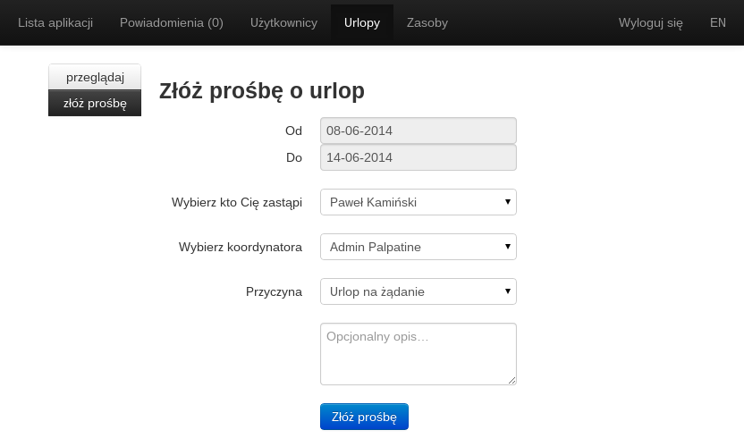Efekty pracy
Wtyczka Urlopy
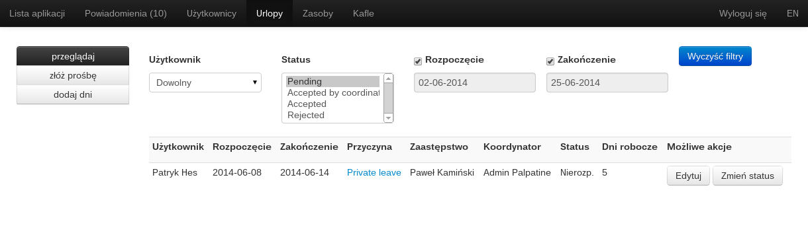Efekty pracy
Wtyczka Urlopy
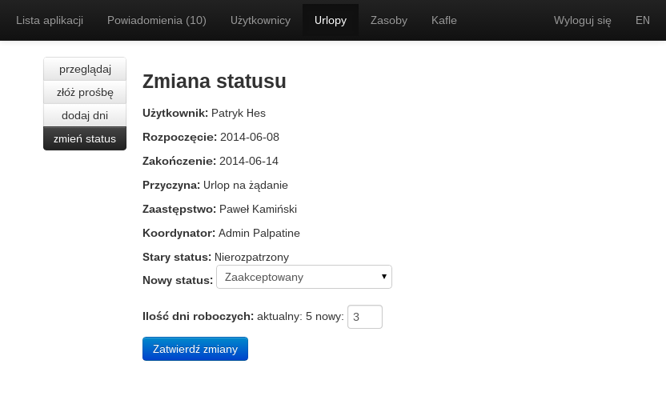Efekty pracy
Wtyczka Zasoby
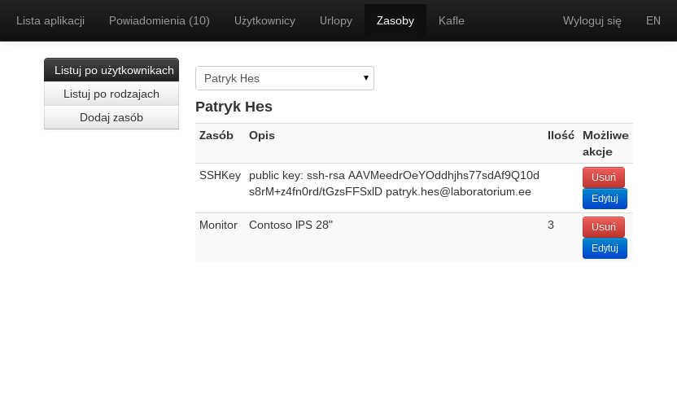Efekty pracy
Wtyczka Zasoby
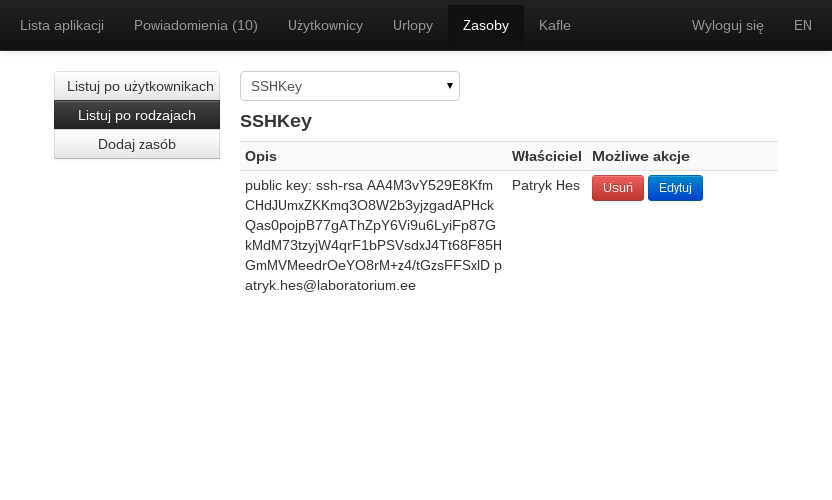Efekty pracy
Wtyczka Zasoby
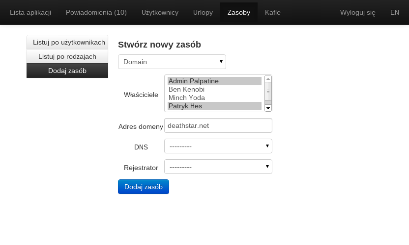